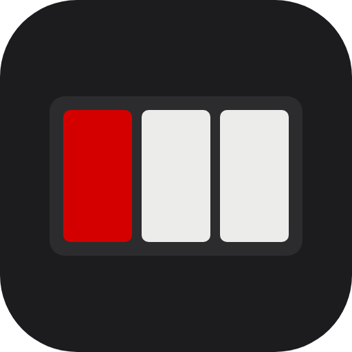
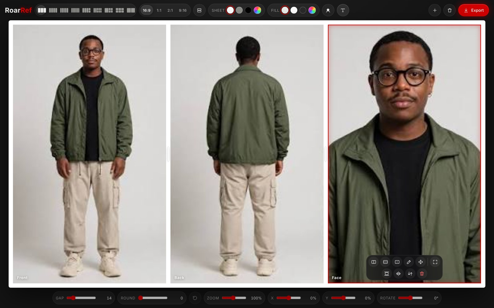

ROARREFNewYour character, every side, one sheet.
A 16:9 reference sheet for AI. Pick how many windows, drop your photos in, move and zoom each one inside its window, and export a 4K picture to give any image or video model.
Free · nothing to install · your photos stay on your computer

01
Pick the windows
From 2 to 8: front, back and face; front, side, back, face; five or six views; bodies with faces; six expressions.
02
Drop and frame
Drop the photos on the windows. The windows stay put; drag each photo where you want it, zoom with the wheel or two fingers, mirror it.
03
Export in 4K
One PNG of 3840 × 2160, no writing on it unless you turn the labels on. Your last sheet waits in this browser.